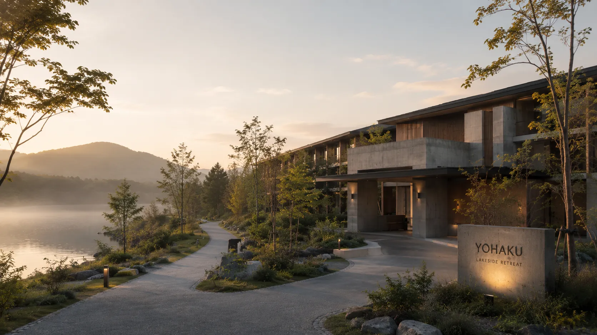

LOCATION
湖と森が織りなす、
湖と森が織りなす、
非日常の静寂へ
北海道の澄んだ空気と豊かな自然に包まれた湖畔。
四季折々の表情を見せる木々、静かに波打つ水面が、訪れる方を優しく迎え入れます。
MORNING
朝露に濡れる樹々とともに歩む、澄み渡る朝の散策路。
NIGHT
静寂のなかで仰ぎ見る、息をのむほど美しい満天の星空。
HOW TO GET HERE
お越し方のご案内
札幌市内より 約1時間30分
道央自動車道を経由し、最寄りICを下車後、湖畔沿いの景色を楽しみながらドライブをお楽しみいただけます。
無料駐車場完備（ご予約不要 / 屋根付き区画あり）
お車・レンタカーで 約1時間10分
空港から高速道路を利用し、スムーズにお越しいただけます。
ご希望の方には送迎バス（要予約）もご用意しております。
MAP